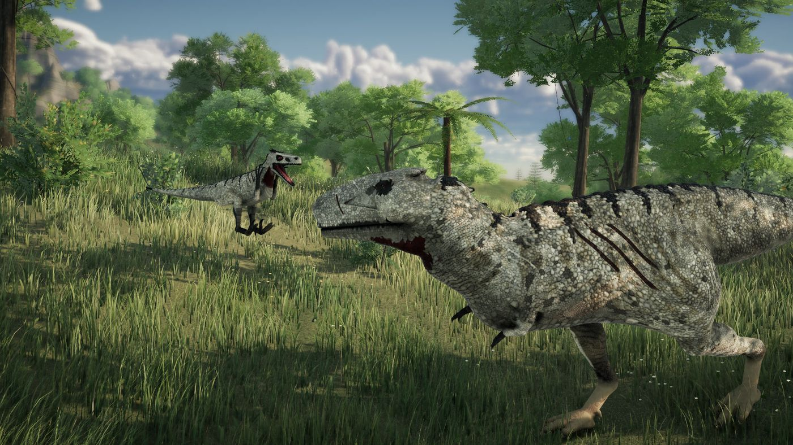
Toda vida empieza pequeña
Empiezas pequeño y con hambre, en una isla llena de cosas que querrían comerte. Encuentra comida y agua, aprende el terreno y crece hasta ser un animal que los demás tengan que respetar.
Un juego hardcore y online de supervivencia con dinosaurios. Los demás jugadores pueden ser tus aliados, tus rivales o tu próxima comida.
Beta cerrada gratis en Android

Empiezas pequeño y con hambre, en una isla llena de cosas que querrían comerte. Encuentra comida y agua, aprende el terreno y crece hasta ser un animal que los demás tengan que respetar.
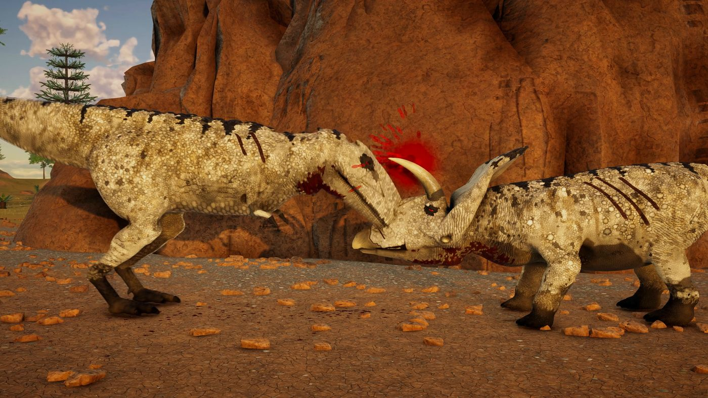
Una buena emboscada puede valer tanto como el tamaño, y una mala pelea puede acabar con una vida que te costó hacer crecer. Cuando mueres, esa vida se acabó y vuelves a empezar desde el principio.
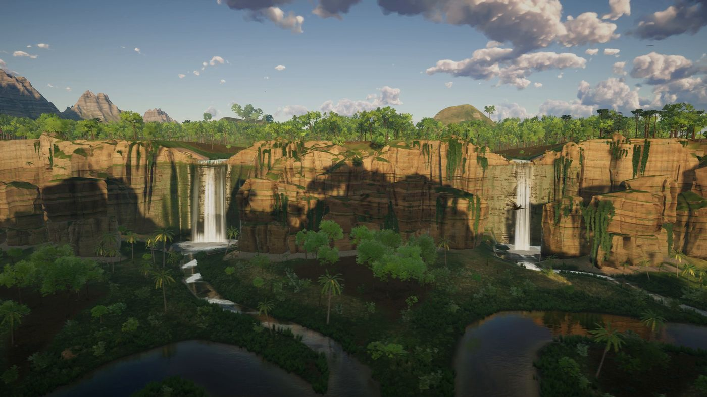
Cuatro kilómetros por cuatro de bosque, río, pantano y costa abierta. El clima y la luz no dejan de cambiar, y siempre hay un lugar más seguro donde descansar, si consigues llegar.
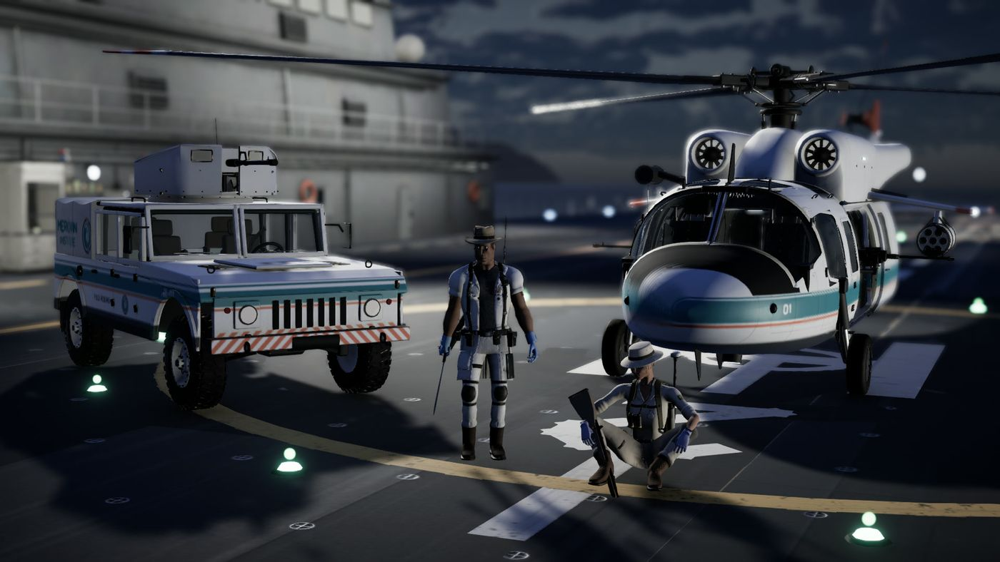
En Humanos vs Dinos, la gente llega desde un portaaviones con armas, camionetas y helicópteros, y tiene una misión que terminar antes de irse. Elige tu bando.
Siete animales, cada uno con su forma de seguir vivo.
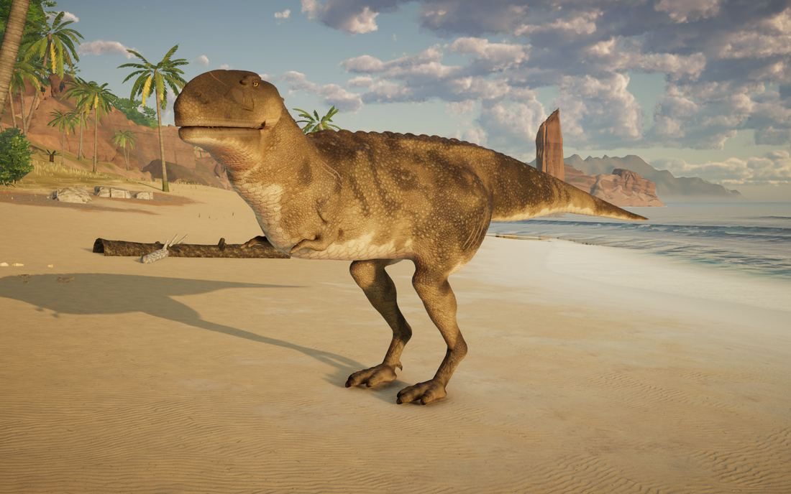
El mayor cazador en tierra, y aun así tiene que elegir sus peleas.
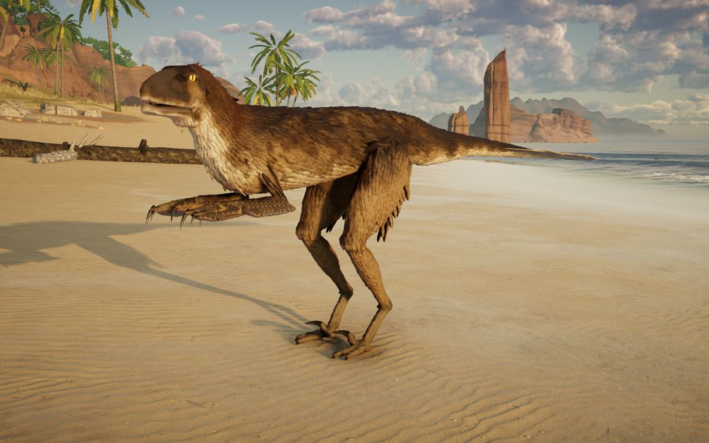
Solo es comida. En grupo es un problema para todos.
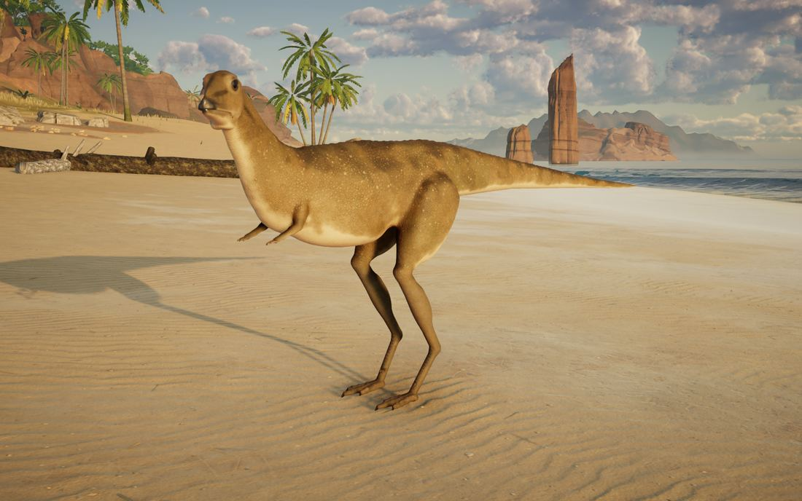
Un herbívoro pequeño de patas largas. Correr es el plan, y casi siempre el único.
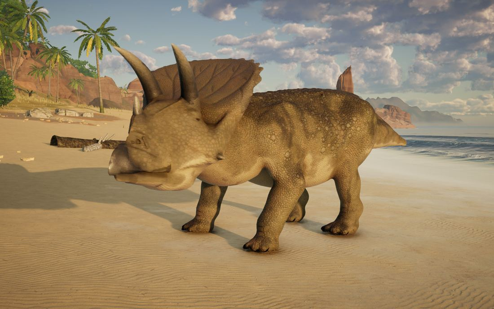
Cuernos, una gola y mal genio. Pocos cazadores quieren empezar esta pelea.
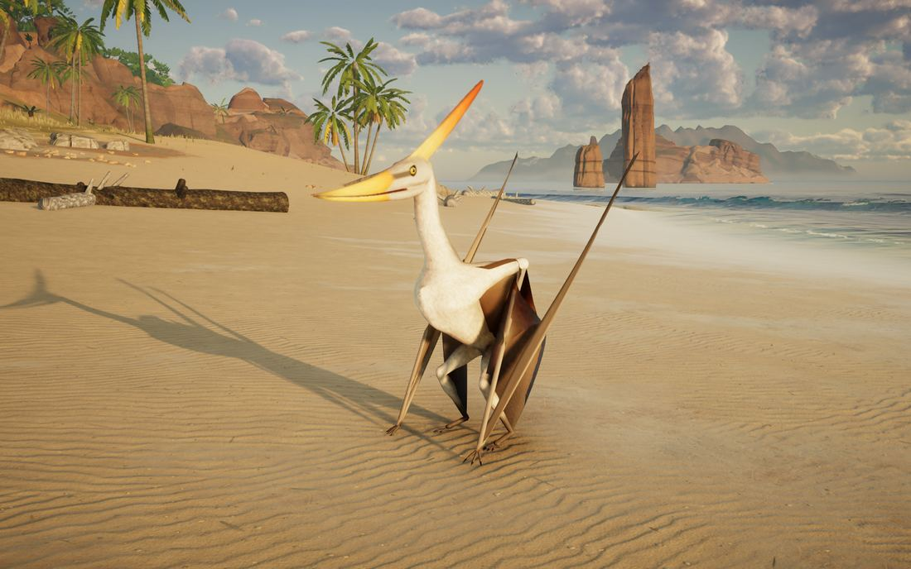
Toda la isla vista desde arriba. Nada en el suelo te alcanza hasta que aterrizas.
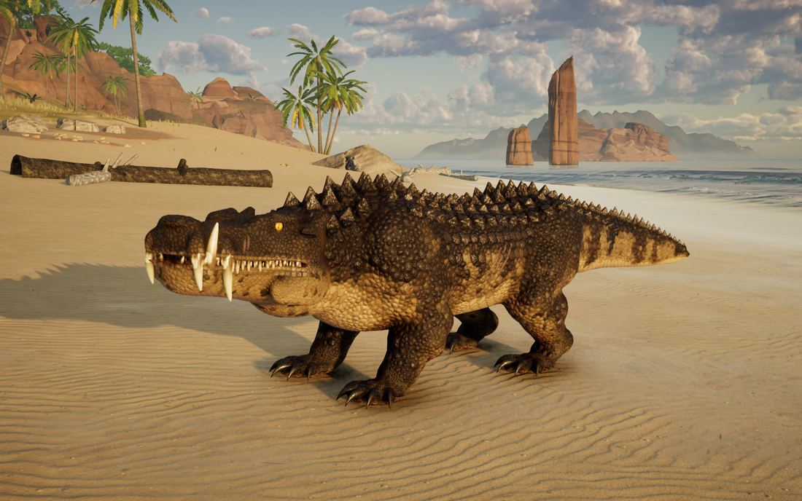
Espera al borde del agua y sale muy rápido.
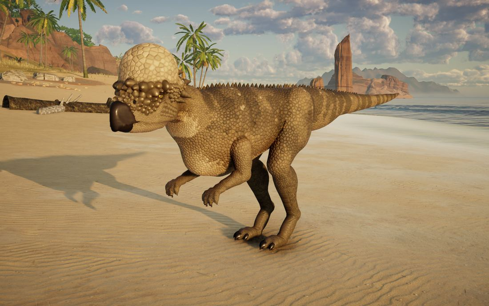
Un cráneo como un ariete y la costumbre de arreglarlo todo de frente.
Imágenes y tráiler del juego en PC. En los móviles se ve más sencillo.
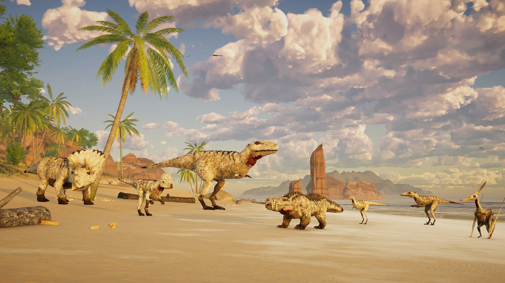
La beta cerrada para Android es gratis. Los primeros 100 testers que completen 14 días seguidos y lo pidan reciben la Founders Edition gratis en el lanzamiento: 10 skins, valoradas en US$39,99, que solo se venden por tiempo limitado.
Android 8.0 o superior, 64 bits. Más adelante llegará a PC en Steam. Reglas completas